板材成形试验平台操作指南 |
EC130、EC200、EC600L、EC600、EC1200、EC2000系列 |
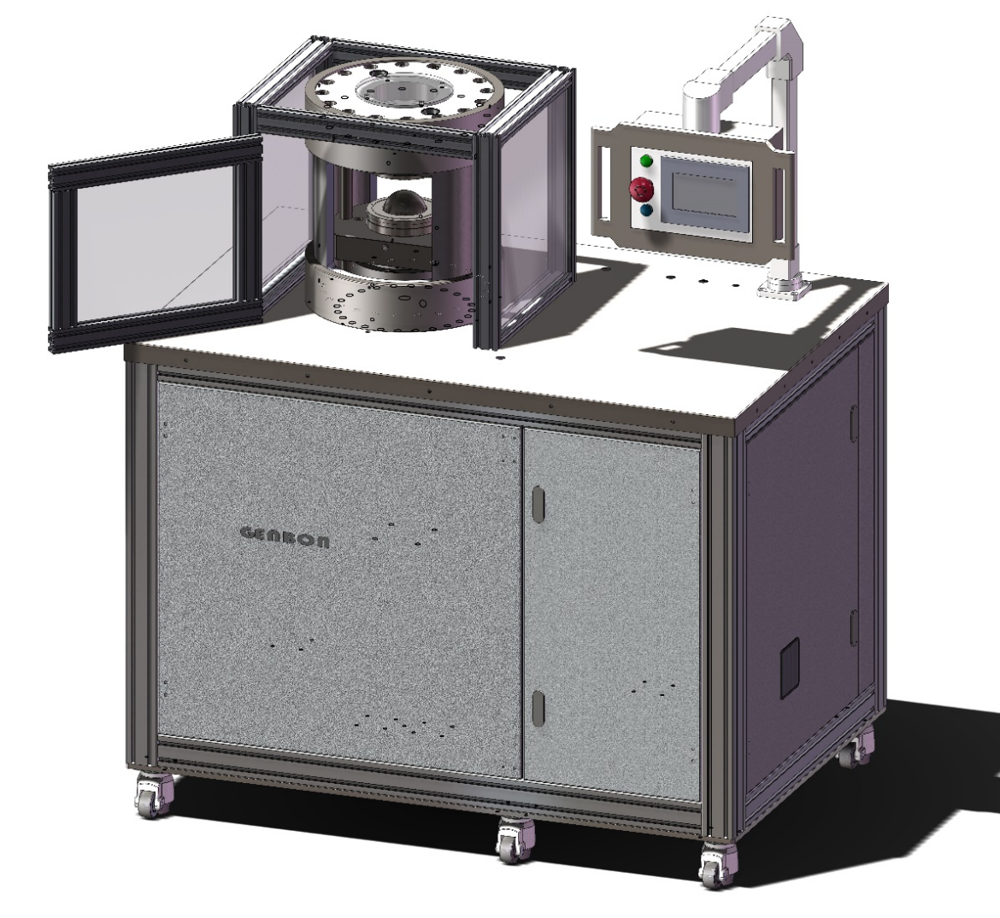
目录
注意：开机过程请勿将手放入测试工位
PART1 基本参数
机型 | EC600L/EC600 |
拉伸力 | 伺服电液400KN/伺服电液600KN |
压边力 | 闭环电液400KN/闭环电液600KN |
最大样板宽度 | 280mm |
监控方式 | 触摸屏 |
最大拉伸位移 | 120mm |
位移精度 | 0.01mm |
电源 | AC220V |
功耗 | 4KW/5.5KW |
机台尺寸长*宽*高） | 1510*1010*1700mm |
质量 | 约1500KG |

机型 | EC1200/EC2000 |
拉伸力 | 伺服电液1200KN/伺服电液2000KN |
压边力 | 闭环电液1200KN/闭环电液2000KN |
最大样板宽度 | 280mm |
监控方式 | 触摸屏 |
最大拉伸位移 | 120mm |
位移精度 | 0.01mm |
电源 | 三相AC380V |
功耗 | 10KW/12KW |
机台尺寸长*宽*高） | 1650*1280*1750mm |
质量 | 约2300KG/ 3800KG |
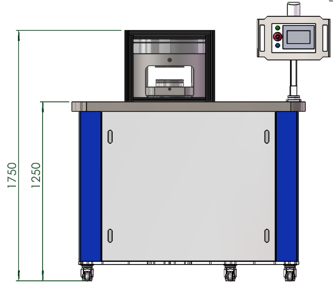 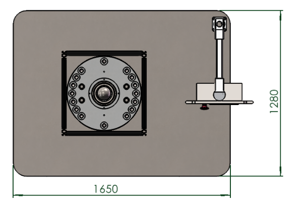 | |
PART2 可配置试验
（1）深拉冲杯试验模具（凸耳试验）：自动裁切圆形样片、自动脱废料、压边力可释放
冲模、凹模、压边圈对中性偏差小于0.05mm
配置：冲裁环（90mm）、压边圈（内径60mm）、冲模（外径60mm）、凹模（内径61.12mm、62.24mm，64.50mm；R3mm）
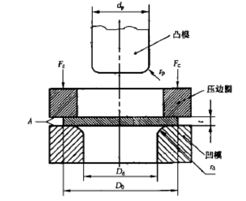
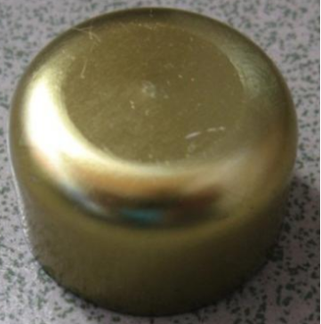
（2）FLD热成形极限试验模具：自动压边，自动拉伸，可自动感应停止拉伸
冲模、凹模、压边圈对中性偏差小于0.05mm
配置：压边圈（内径100mm）、球形冲模（直径100mm）、凹模（内径107mm，R5mm）
①可配置第三方光学FLD系统
②压边圈与凹模可通过高频加热环加热至550摄氏度；可将加热样片放置于压边模具中间升温，也可外部加热至更高温度再放入模具测试（冲模处于常温状态，需铜片与样板隔离）
③模具材质：红热冲模具钢，可在550摄氏度条件下长期工作
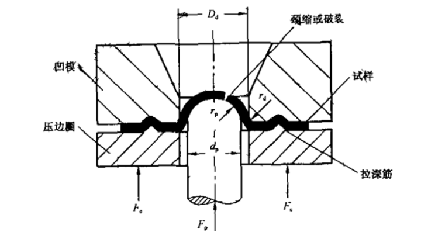
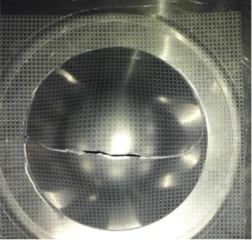
（3）FLD常温成形极限试验模具：自动压边，自动拉伸，可自动感应停止拉伸
冲模、凹模、压边圈对中性偏差小于0.05mm
配置：压边圈（内径100mm）、球形冲模（直径100mm）、凹模（内径107mm，R5mm）
①可配置第三方光学FLD系统
(4）拉伸载荷试验模具（LDR）：冲模、凹模、压边圈对中性偏差小于0.05mm
配置：压边圈（内径60mm，外径120mm）、冲模（外径60mm）、凹模（外径120mm；内径61.12mm、62.24mm，64.5Omm，R3mm）
（5）扩孔试验模具：配置：压边圈（内径60mm）、顶角60度锥头冲模（外径60mm）、凹模（内径74mm、R5mm）
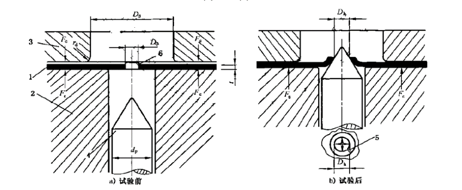
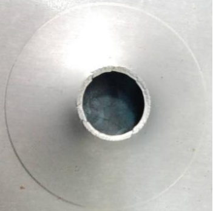
PART3 准备工作
主机功能区
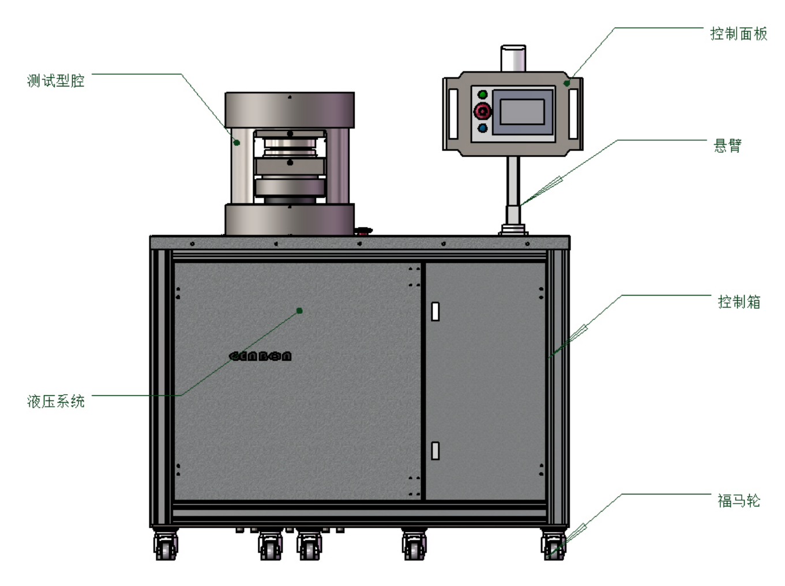
占地尺寸： 1520*1020mm
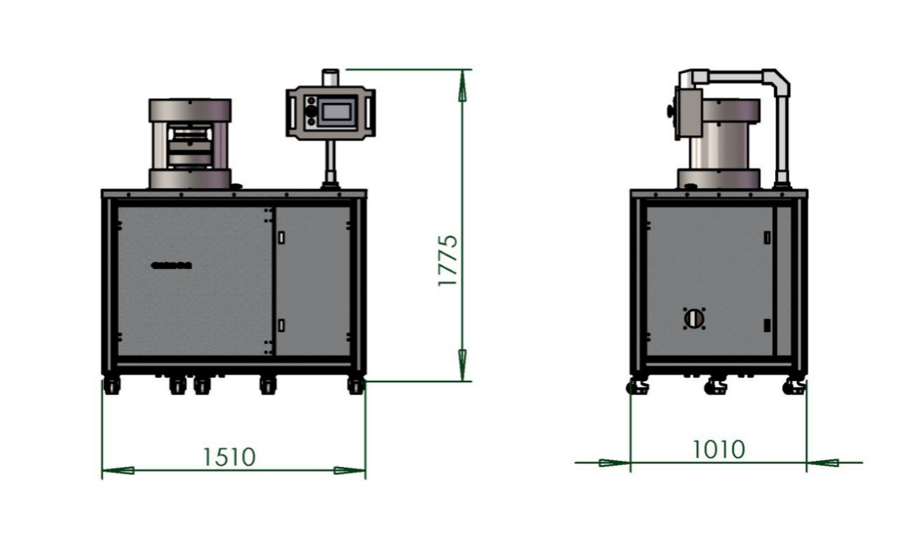
主机底部带万向滚动脚轮，单个可承受500KG质量，释放脚轮厚可以在水平地面自由推动。将机器推之所需放置位置，拧动脚轮齿轮抬升固定柱即可固定主机（红色部分旋拧）
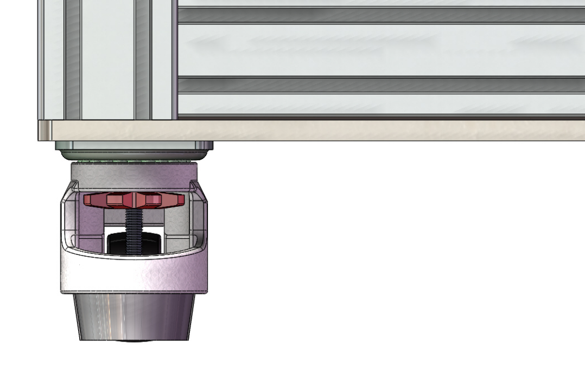
电源：AC220V
液压：机器内部自带液压系统，无需接入外界液压源
PART4 开机
第一步：接通电源。将主机电源线头直接插入常规AC380V安全电源插座（16A）；如果电源处于接通状态，控制面板上的“电源指示灯”会自动亮起。
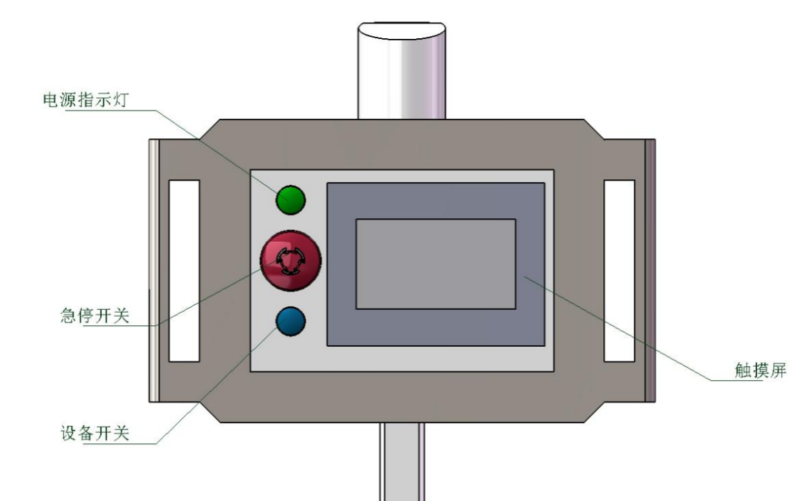
第二步：开启主机。按下触摸屏左下角的“设备开关”，确保最下方的“急停开关”处于释放状态；3秒后触摸屏将自动启动，进入第一个操作界面。
PART5 界面简介
5.1 主界面
机器开机按钮按下后，系统会自动进入下列界面
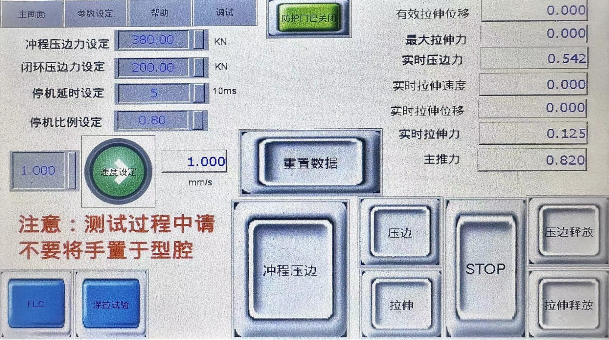
（1）最上面一排灰色按钮是界面快速选择按钮，点击此行按钮可以快速进入各项操作界面
“主画面”为主操作界面，“帮助”为设备信息和简单操作提示
（2）左边一排为参数设定框，包括
闭环压边力设定：准静态精密控制压边力
冲程压边力设定：最大速度压边，主要用于快速合模或者剪切样片
停机比例设定：用于自动停止拉伸前进，如果 “实时拉伸力/最大拉伸力<停机比例设定”，系统则开始停机计算，需配合“延时设定”协同工作
延时设定：当“实时拉伸力/最大拉伸力<停机比例设定”的时候，开始延时毫秒停机（单位10mm）
拉伸速度设定：可自由设定拉伸速度范围
偏移设置：传感器都存在零飘与温飘特性，尤其是大量程传感器明显，在拉伸开始之前可以输入显示的 “实时拉伸力”，多输入几次，直到“实时拉伸力”在零点左右轻微波动即可
拉伸位移设定：可以设定拉伸的最大位移，自动停机
起始拉伸力设定：冲模接触到样板产生载荷，开始记录拉伸位移和拉伸力
（3）下方5个蓝色边框按钮（其他三个在参数设定页面）为试验快速选择按钮，包括“FLC”、“深拉”、“扩孔”、“LDR”、“锥杯”
（4）右上部为主机运行中的各项参数，包括“有效拉伸位移”、“最大拉伸力”、“实时压边力”、“实时拉伸速度”、“实时拉伸位移”、“实时拉伸力”、“拉伸时间”
（5）右边下部为主机试验操作按钮，包括“冲程压边”、“压边”、“压边释放”、“拉伸”、“拉伸释放”、“暂停动作”、“重置数据”
（6）最下面红色色字体是警告：“测试过程中请不要将手置于型腔”
PART6 试验过程
6.1 模具更换过程
6.1.1 FLC、杯凸、凸耳、拉伸试验模具更换方法

一．拆卸模具方法：
第一步（取凹模）：按下“压边”，并长按“闭环压边”，让下模具快速上升接触到上模具。注意：轻微接触，托住上模具即可，用内六角螺丝刀逆时针旋转锁紧模架用于锁紧模心的螺钉（前后两颗内六角），然后按下“压边释放”，凹模会随着压边圈一起下行。
第二步（取压边圈）：用内六角扳手取下“压边圈锁紧螺栓”，前后两颗内六角“压边圈锁紧螺栓”卸下后，用双手握住压边圈轻轻抬出，如果抬的时候可能会偏心，偏心可以用铜棒或者铝棒轻轻敲击模具侧面松动模具慢慢取出。
第三步（取冲模）：按下“拉伸”按钮，让冲模上行至可以取下位置再停机。然后取下冲模
装配模具方法：
第一步（装冲模）：将冲模放置在正中心顶杆上，注意中心装配孔对齐即可，然后按下“拉伸释放”，让冲模下降至最低点
第二步（装压边圈）：检查两颗“压边圈锁紧螺栓”是否取下，双手轻轻将压边圈放入下面“压边圈座”内圈，如果轻微偏斜可能卡住，可以用铜棒或者铝棒轻轻敲击平衡松动慢慢托入，然后装上并锁紧前后两颗“压边圈锁紧螺栓”。
第三步（装凹模）：检查两颗“凹模锁紧螺栓”是否取下，双手轻轻托住凹模放进上面“凹模座”内圈，如果轻微偏斜可能卡住，可以用铜棒或者铝棒轻轻敲击平衡松动慢慢托入，然后锁紧“凹模锁紧螺栓”。
第四步检查：检查上下模具是否与模具座贴平并锁紧，按下“压边”与“压边释放”按钮检查能否正常压紧贴合；然后按下“拉伸”与“拉伸释放”按钮检查中心模具能否正常上下运动。
注：所有过程可以稍微喷WD40润滑除锈剂便于安装
二．凹模不同尺寸模具更换方法
第一步：取下凹模之后取下凹模上方固定的两颗螺丝

 （固定螺丝）
（固定螺丝）

第二步: 用双手握住凹模内圈轻轻抬出，如果抬的时候可能会偏心，偏心可以用铜棒或者铝棒轻轻敲击模具松动模具慢慢取出。
第三步：双手轻轻将要更换的凹模内圈放入凹模，如果轻微偏斜可能卡住，可以用铜棒或者铝棒轻轻敲击平衡松动慢慢放入，放到底部之后转动凹模内圈对准凹模上的螺丝孔，安装螺丝。
6.1.2Marciniak试验模具更换方法
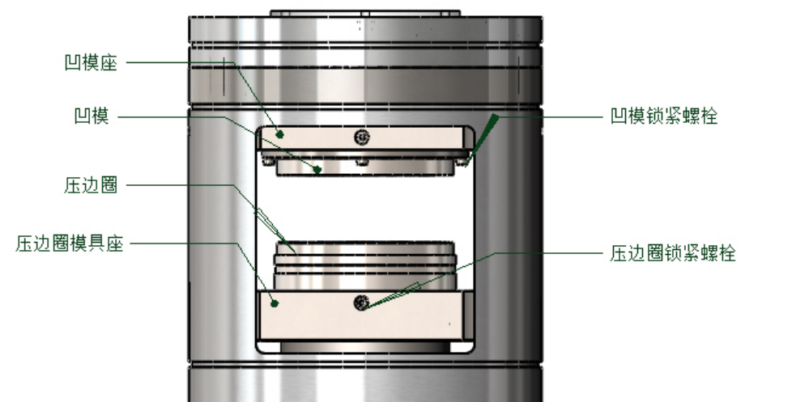
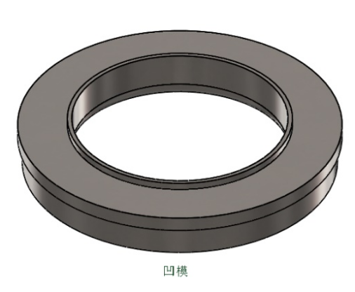
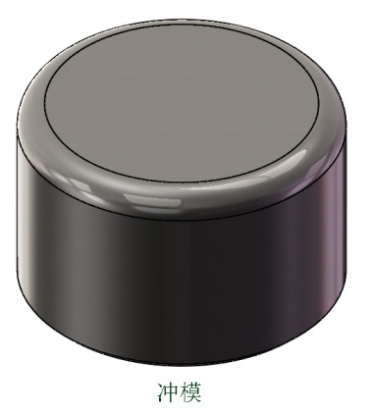
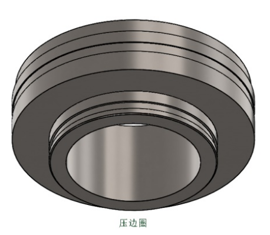
拆卸模具方法：
第一步（取凹模）：控制机器下部模具到最底下位置，留下操作空间，然后断电操作。用内六角扳手取下“凹模锁紧螺栓”（圆周四颗）。注意：去掉螺栓后，上面凹模会掉下来，需要用手托住。
第二步（取压边圈）：用内六角扳手取下“压边圈锁紧螺栓”，前后两颗内六角“压边圈锁紧螺栓”卸下后，用双手握住压边圈轻轻抬出，如果抬的时候可能会偏心，偏心可以用铜棒或者铝棒轻轻敲击模具侧面松动模具慢慢取出。
第三步（取冲模）：机器上电开启，按下“拉伸”按钮，让冲模上行至可以取下位置再停机。然后取下冲模
装配模具方法：
第一步（装冲模）：将冲模放置在正中心顶杆上，注意中心装配孔对齐即可，然后按下“拉伸释放”，让冲模下降至最低点
第二步（装凹模）：检查四颗“凹模锁紧螺栓”是否取下，双手轻轻托住凹模放进上面“凹模座”内圈，如果轻微偏斜可能卡住，可以用铜棒或者铝棒轻轻敲击平衡松动慢慢托入，然后锁紧“凹模锁紧螺栓”。
第三步（装压边圈）：检查两颗颗“压边圈锁紧螺栓”是否取下，双手轻轻将压边圈放入下面“压边圈座”内圈，如果轻微偏斜可能卡住，可以用铜棒或者铝棒轻轻敲击平衡松动慢慢托入，然后装上并锁紧前后两颗“压边圈锁紧螺栓”。
第四步检查：检查上下模具是否与模具座贴平并锁紧，按下“压边”与“压边释放”按钮检查能否正常压紧贴合；然后按下“拉伸”与“拉伸释放”按钮检查中心模具能否正常上下运动。
注：所有过程可以稍微喷WD40润滑除锈剂便于安装
6.2 杯凸测试过程
第一步：点击FLC试验控制界面，闭环压边力设置在20~100KN范围以内，停机比例设置在0.7~0.9范围以内。
第二步：点击“压边释放”、“拉伸释放”按钮，踩住脚踏开关，让机器自动运行至模具最大开口位置。
第三步：放入样板，放置样板前请将样板均匀涂抹润滑介质，样板要置于“压边圈”的正上方。
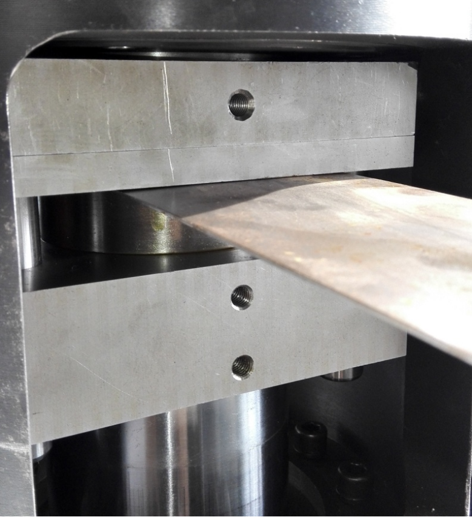
第五步：点击“压边”，压边圈会自动上行，与凹模夹住样板
第六步：点击“拉伸”，冲模自动上行，冲裂板材，试验完成
第7步：点击“拉伸释放”与“压边释放”，冲模与压边圈下行，取下试样
注：
通过“位移距离设定”可以可以限定模具拉伸样板的最大行程。如果需要设备感应屈服极限停机，请将位移距离设置大于30
“延时设定”可以改变设备感应到屈服极限后，机器的停机时间，时间设置得越大，样板破裂状态越明显
6.3 冲杯凸耳试验过程
凸耳试验的目的
凸耳试验也叫深拉冲杯试验，主要测试材料的各向异性。
凸耳试验的组成
EC系列板材成形试验机的凸耳试验模具主要由凹模、剪切环、冲模、脱料板、压边圈组成。
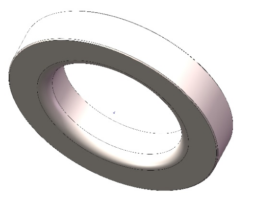 凹模 | 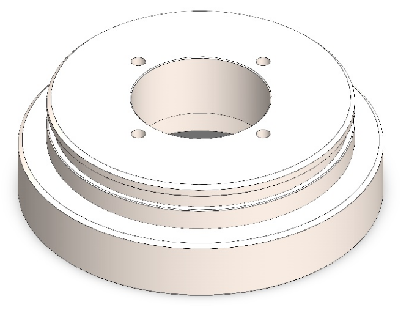 剪切环 |
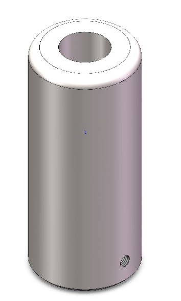 冲模 | 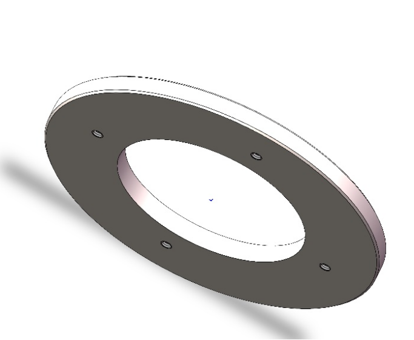 脱料板 |
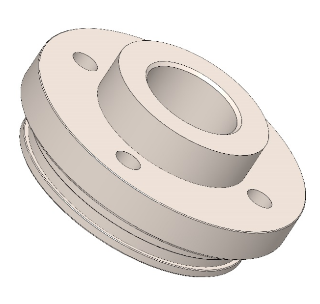 压边圈 | |
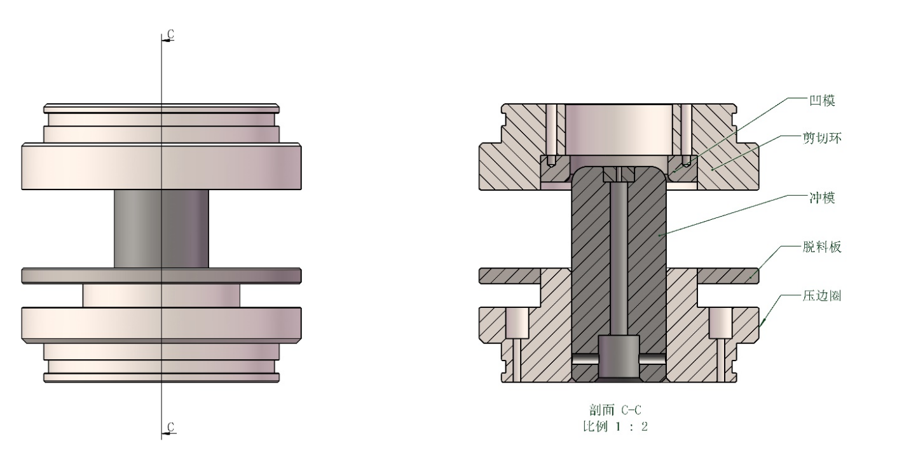 凹模与剪切环通过四根螺栓组成一体；脱料板与压边圈配合弹簧组成一体。 | |
凸耳试验模具的安装
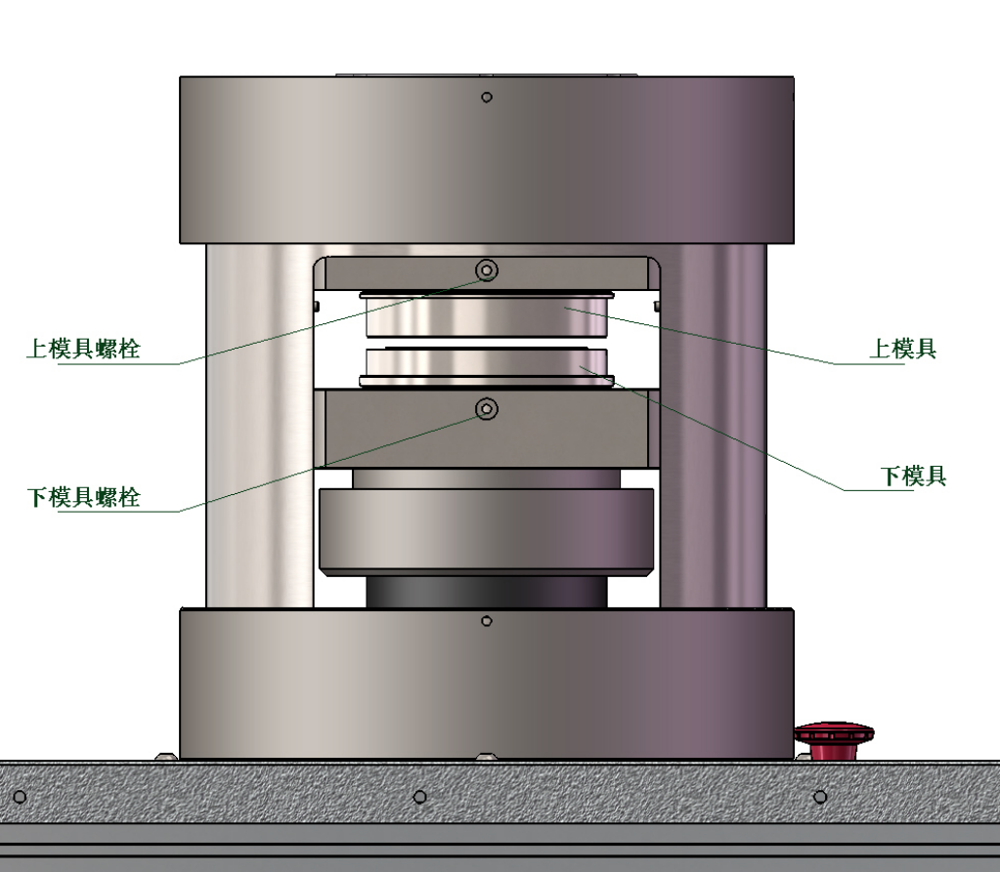
一．拆卸模具方法：
第一步（取凹模）：按下“压边”，并长按“闭环压边”，让下模具快速上升接触到上模具。注意：轻微接触，托住上模具即可，用内六角螺丝刀逆时针旋转锁紧模架用于锁紧模心的螺钉（前后两颗内六角），然后按下“压边释放”，凹模会随着压边圈一起下行。
第二步（取压边圈）：用内六角扳手取下“压边圈锁紧螺栓”，前后两颗内六角“压边圈锁紧螺栓”卸下后，用双手握住压边圈轻轻抬出，如果抬的时候可能会偏心，偏心可以用铜棒或者铝棒轻轻敲击模具侧面松动模具慢慢取出。
第三步（取冲模）：按下“拉伸”按钮，让冲模上行至可以取下位置再停机。然后取下冲模
装配模具方法：
第一步（装冲模）：将冲模放置在正中心顶杆上，注意中心装配孔对齐即可，然后按下“拉伸释放”，让冲模下降至最低点
第二步（装压边圈）：检查两颗“压边圈锁紧螺栓”是否取下，双手轻轻将压边圈放入下面“压边圈座”内圈，如果轻微偏斜可能卡住，可以用铜棒或者铝棒轻轻敲击平衡松动慢慢托入，然后装上并锁紧前后两颗“压边圈锁紧螺栓”。
第三步（装凹模）：检查两颗“凹模锁紧螺栓”是否取下，双手轻轻托住凹模放进上面“凹模座”内圈，如果轻微偏斜可能卡住，可以用铜棒或者铝棒轻轻敲击平衡松动慢慢托入，然后锁紧“凹模锁紧螺栓”。
第四步检查：检查上下模具是否与模具座贴平并锁紧，按下“压边”与“压边释放”按钮检查能否正常压紧贴合；然后按下“拉伸”与“拉伸释放”按钮检查中心模具能否正常上下运动。
注：所有过程可以稍微喷WD40润滑除锈剂便于安装
二．凹模不同尺寸模具更换方法
第一步：取下凹模之后取下凹模上方固定的两颗螺丝
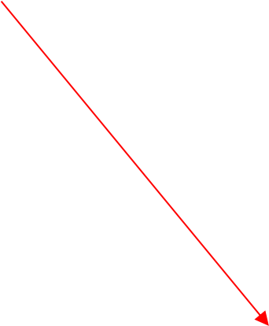
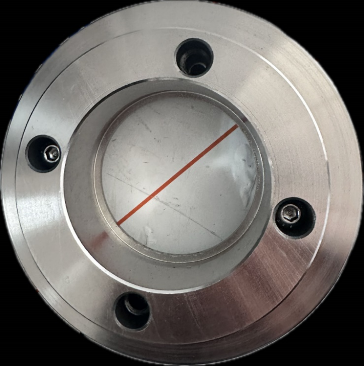
第二步: 用双手握住凹模内圈轻轻抬出，如果抬的时候可能会偏心，偏心可以用铜棒或者铝棒轻轻敲击模具松动模具慢慢取出。
第三步：双手轻轻将要更换的凹模内圈放入凹模，如果轻微偏斜可能卡住，可以用铜棒或者铝棒轻轻敲击平衡松动慢慢放入，放到底部之后转动凹模内圈对准凹模上的螺丝孔，安装螺丝。
凸耳试验过程
第一步：进入深拉冲杯试验控制界面
第二步：点击“压边释放”、“拉伸释放”按钮，让机器自动运行至模具最大开口位置。
第三步：放入样板，放置样板前请将样板均匀涂抹润滑介质，样板要置于“压边圈”与“剪切环”之间。
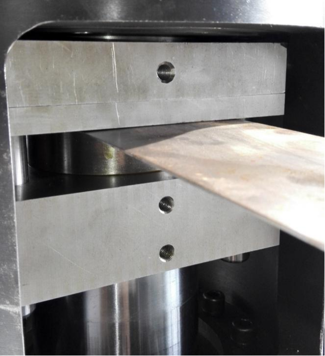
第四步：点击“压边”，长按住“闭环压边”，压边圈会自动上行，与“剪切环”错位剪开样板
第五步：样板剪切完成后，按压边释放，取下废料样板。如果样板太厚，弹簧自动弹不开废料，可以用手轻轻扳动样板即可弹开。
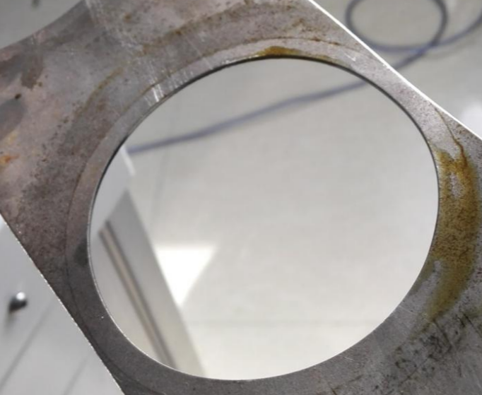
第六步：再次点击“压边”按钮，让模具上行，压边圈与凹模将样板压机
第七步：可以打开“闭环压边力设定”按钮，调整所需要的压边力，通常压边力设定范围是10KN~80KN
第八步：按下“拉伸”，冲模会自动拉伸出圆杯，待曲线采集完成后，将停机比例设为0，再次按下“拉伸”，则可以取出冲模与样品
第九步：如果样片太厚卡太紧，需用细长顶杆将冲杯顶出冲模
6.4 扩孔试验过程
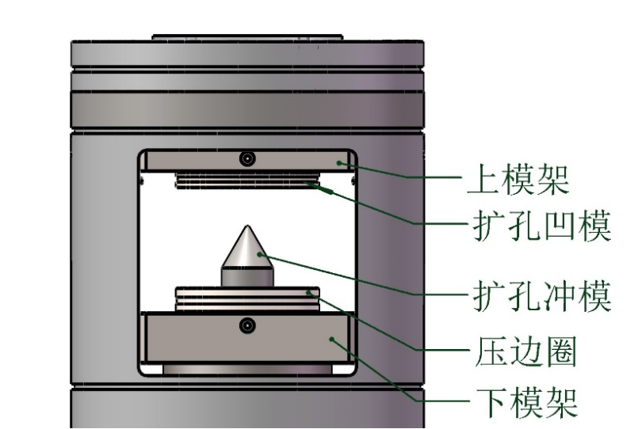
装配模具方法
第一步（装冲模）：将尖头冲模放置在正中心顶杆上，注意中心装配孔对齐即可，然后按下“拉伸释放”，让冲模下降至最低点
第二步（装凹模）：检查四颗“凹模锁紧螺栓”是否取下，双手轻轻托住凹模放进上面“凹模座”内圈，如果轻微偏斜可能卡住，可以用铜棒或者铝棒轻轻敲击平衡松动慢慢托入，然后锁紧“凹模锁紧螺栓”。
第三步（装压边圈）：检查两颗颗“压边圈锁紧螺栓”是否取下，双手轻轻将压边圈放入下面“压边圈座”内圈，如果轻微偏斜可能卡住，可以用铜棒或者铝棒轻轻敲击平衡松动慢慢托入，然后装上并锁紧前后两颗“压边圈锁紧螺栓”。
第四步检查：检查上下模具是否与模具座贴平并锁紧，按下“压边”与“压边释放”按钮检查能否正常压紧贴合；然后按下“拉伸”与“拉伸释放”按钮检查中心模具能否正常上下运动。
注：所有过程可以稍微喷WD40润滑除锈剂便于安装
6.5 软件使用过程
第一步：使用网线将电脑与机器连接起来，打开桌面上的SMFT-S软件，打开软件后稍等片刻，观察conneted指示灯是否闪烁，闪烁即与机器正常连接，开始试验后即可自动采集数据。
第二步：实验完成后右键点击表格右下角方块然后点击导出即可保存数据。（如下一次实验开始时软件曲线没有自动清除请重启软件即可）
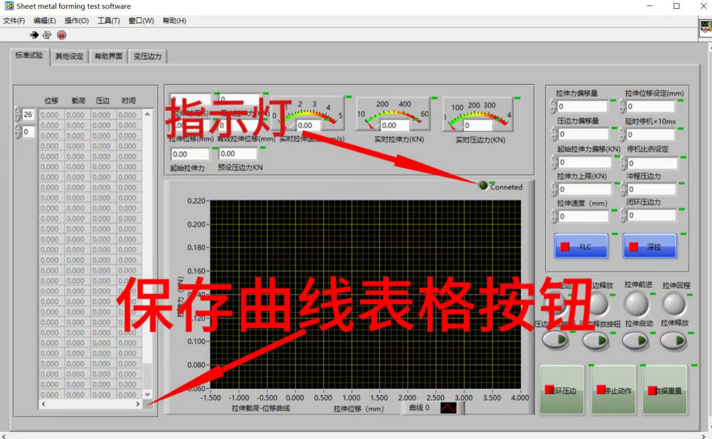
PART7 平台维护
1. 定期清理机台，定期为模具和模腔喷涂防锈油
2. 平台不用请断开电源
3. 如果平均每天使用超过100次，请12个月更换一次液压油；如果使用次数不多，两年需要更换液压油；液压油请采用长城普力68号液压油